Палитра «тёплая осень»: цвета как у осенней листвы, кофе, мха, охры, ржавчины. Все приглушённые, мягкие — не яркие, не неоновые. Подходят к карим тёплым глазам, тёмно-каштановым волосам и тёплой коже Лёши.
Палитра — носить смело
Верблюжий#B18761
Оливковый#6C6A3A
Бутылочный зелёный#2F4A36
Винный#6B2A2A
Ржавый#A45A2A
Горчичный#C08C2F
Шоколад#4A2F1D
Петроль (тёплый navy)#2A4452
Кремовый#EFE3CD
Тёплый беж#C9B08C
Цвета, которые НЕ работают
Тушат тёплый подтон, делают лицо уставшим. Чёрный — только с верхним слоем другого цвета, не у самого лица.
Чистый чёрный у лица
Ярко-белый
Холодный стальной
Ледяной голубой
Фуксия / неон
Неоновый зелёный
2. У вас с Лёшей один сезон — но разный «уклон»
Оба — Soft Autumn. Значит общая база, общие цвета, можно даже носить вещи похожих оттенков и не «спорить» по цвету. Разница в нюансах.
Глубже, теплее. Шоколад, охра, горчица, винный, бутылочный зелёный — его опорные цвета.
Общее (носите оба)
Верблюжий, оливковый, кремовый, тёплый беж, петроль. На фотках вместе будете в гармонии.
3. Фигура — перевёрнутый треугольник (V-shape)
Плечи шире бёдер, талия узкая. Это «героический» мужской силуэт — на нём отлично сидит smart casual. Главное — не добавлять ширину плечам, подчёркивать талию, давать форму ягодицам через крой брюк.
Плечи 120+ см — широкие, массивные. Не добавлять ширину подплечниками.
Талия 86 см (W34) — узкая. Это сильная сторона, обозначать заправкой, ремнями.
Бёдра 104 см — у́же плеч на ~16 см. Природного объёма ягодицам не даёт — решает крой брюк.
Ноги длинные — выигрывают в slim-straight, проигрывают в baggy.
Лёгкий живот внизу — не обтягивать, не носить высокую посадку с прямой заправкой в обтяжку.
4. Брюки — главный приоритет
Лёша хочет подчеркнуть попу. При узких бёдрах это делается кроем: mid-rise посадка по середине, маленький-средний задний карман на средней трети ягодицы, straight или чуть свободный (relaxed) силуэт. Никаких skinny, slim-tapered с узкой щиколоткой, joggers с резинкой внизу — это тренд 2010-х, в 2026 это старит и убивает «солидно».
✓ Да — straight, mid-rise, со складкой
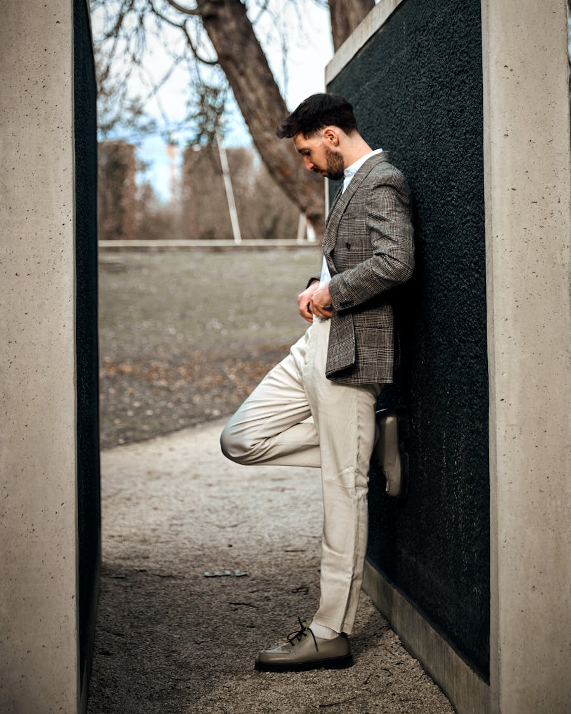
Прямые брюки от бедра до щиколотки, можно со складкой (pleated)
Посадка mid-rise — по середине таза, не низкая. Это поднимает попу визуально.
Облегание в бёдрах и заде, прямо вниз — крой держит форму ягодиц, но не сжимает.
Складки у пояса (pleats) — современный тренд 2024–2026, прибавляют объём и «дорогость», скрывают мягкий живот.
Карман: средний, попадает на среднюю треть ягодицы.
Длина: до подъёма стопы (no break) или с лёгкой подворотом.
Лоферы / дерби с ортостелькойКожаные, но внутрь — ортопедическая стелька. Каблук 2–3 см снимает нагрузку.
✓
Челси на резиновой подошвеКожаные ботинки с амортизирующей подошвой, не на тонкой кожаной.
Кроссовки с амортизацией
Лоферы с ортостелькой
✗ Чего избегать
✗
Converse / Vans / низкие кедыТонкая плоская резиновая подошва без поддержки свода — для плоскостопия плохо.
✗
Жёсткая плоская кожаная подошваДорогие итальянские лоферы «на кожаной подошве» без вкладок — нагрузка идёт прямо на свод.
✗
Шлёпки и плоские сандалииНикакой поддержки. На лето — Birkenstock или Mephisto с супинатором.
✗
Туфли на скользкой кожаной подошвеТравмоопасно при плоскостопии — стопа «гуляет».
Плоский кед без свода
6. Что носить — конкретные вещи
Базовый набор «solid & expensive» на сезон. Все вещи сочетаются друг с другом по цвету и стилю.
Оксфорд кремовый, заправляется
Меринос оливковый, тонкий
Футболка плотный хлопок, шоколад
Шерстяные брюки шоколад
Чино верблюжий
Джинсы тёмное индиго
Овершот / неструктурированный пиджак, бутылочный
Лёгкое пальто-чессерфилд, верблюжий
Кроссовки кремовые с амортизацией
Принцип верхнего слоя: Плотный мускулистый торс в одной только облегающей футболке = «фитоняшка». Накинутый овершот / пиджак / кардиган = «солидно и дорого». Верхний слой почти всегда обязателен.
Принцип заправки: Front-tuck (только перед, зад снаружи) при лёгком животе — лучшее решение. Полная заправка только в брюки с правильной посадкой, не в обтяжку.
7. Что НЕ носить
Самые типичные ошибки для V-силуэта на плотной мышечной базе. Каждая — с конкретной причиной.
✗ Ошибка #1
Oversize худи и свитеры
Съедают V-силуэт. Плечи сравниваются с бёдрами, талия пропадает — превращает в «парня из ТЦ».
✗ Ошибка #2
Жёсткий чёрный костюм с подплечниками
Плечи и так широкие. Подплечники + чёрный = «выпускной 2010». Берём мягкие неструктурированные пиджаки.
✗ Ошибка #3
Водолазки под горло
Лицо вытянутое — водолазка удлиняет ещё больше. Вместо: тонкий джемпер с круглым или V-вырезом.
✗ Ошибка #4
Cargo-шорты и штаны с боковыми карманами
Добавляют объём бёдрам, ломают V-пропорцию. Шорты — только обычные с боковым карманом, не «военно-полевые».
✗ Ошибка #5
Кислотные цвета и крупные логотипы
Противоречат запросу «солидно/дорого». Логотип во всю грудь = «бренд-мания», не «солидный мужчина 30 лет».
✗ Ошибка #6
Чёрный у самого лица
Тушит тёплый подтон, делает уставшим. Решение: чёрный низ + цветной верх. Или чёрный пиджак + светлая рубашка под ним.
8. Готовые луки — 20 комплектов с разбором
Каждый лук — flat lay из 3–5 вещей, контекст «куда надеть», и 3 пункта «почему работает». Все вещи в палитре Soft Autumn, под V-силуэт, под подчёркивание ягодиц и плоскостопие. Палитра проверена: везде только тёплые тона, никакого чёрного у лица и холодного серого. Разные люди и контексты: от утреннего кофе до зимнего пальто, от свадьбы гостем до субботнего бранча.
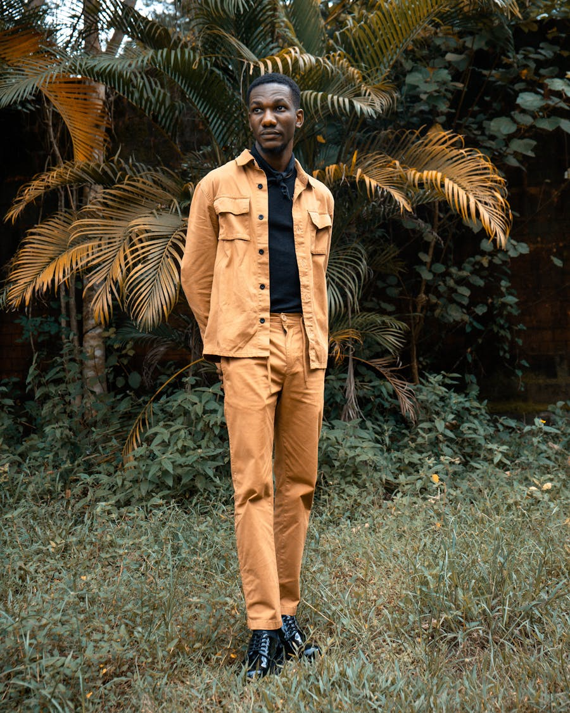
Домашний рабочий
Хенли + чино + кеды-кроссовки
Хенли вместо футболки — пуговицы у горла дают «выходной» оттенок даже дома, лицо смотрится не «спортсменом», а «человеком за столом».
Винный + верблюжий — тёплая пара из палитры. Не яркая, но не скучная.
Чино с эластаном — мягко облегают бедро и зад, при этом не мнутся весь день за компом. Удобно сесть на стул, но если откроется зум — выглядишь собранно.
Шоколадный вельвет-блейзер вместо шерсти — мягкий, текстурный, выглядит «дороже без понта». Читается как «человек со вкусом», не «офисный костюм».
Широкие брюки шалфейного/охра-оливкового тона — современный силуэт, не slim. Контраст с тёмным верхом подчёркивает рост.
Paisley галстук бургунди у горла — теплый цветовой акцент в палитре Autumn. Это «дорогая мелочь», на которой и держится солидность.
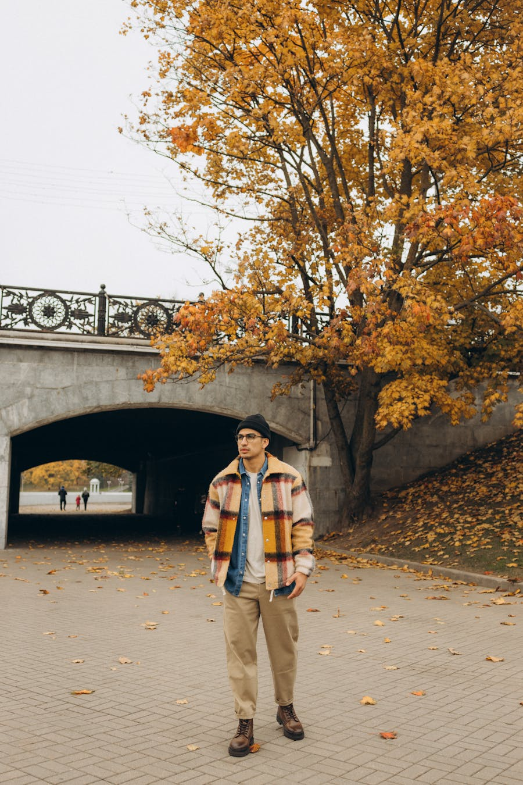
Выход в город днём
Футболка + овершот + джинсы + кроссы
Овершот бутылочного зелёного = верхний слой, который даёт «солидно». Без него белая футболка на плотном торсе = «фитоняшка», с ним = «человек со вкусом».
Тёплый монохром песок→шоколад — закатная палитра. Кремовый верх ловит свет у лица, тёмный низ «приземляет». Romantic, не «офисно».
Зип на четверть вместо водолазки — открывает горло, лицо не «коротится». Текстура трикотажа = осенний уют без свитерного «дедушки».
Wide брюки шоколадного тона — НЕ чёрные. Палитра Autumn, силуэт современный, рост подчёркивается длиной штанины.
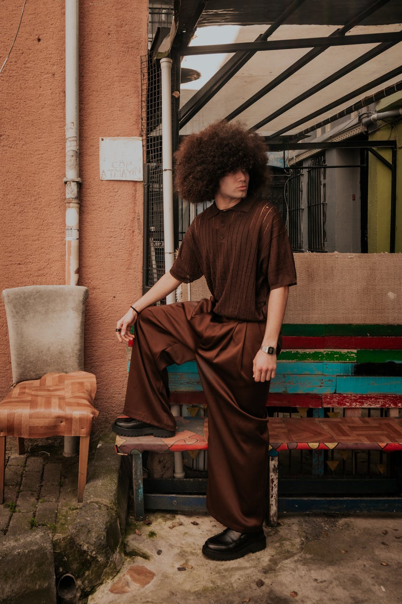
Деловое без галстука / вечерний выход
Тотал-шоколад: поло + широкие брюки + лоферы
Тотал-лук в шоколадной палитре — главный современный приём «солидно и дорого». Один цвет с разной фактурой (трикотаж + шёлк-шерсть) = глубина без пестроты.
Поло вместо рубашки — для случаев «деловое без галстука». Открытое горло удлиняет шею, не «давит» как водолазка.
Wide брюки + лоферы — НЕ slim. Прямая широкая штанина даёт рост и визуально не «сжимает» зад. Лоферы выходят из-под штанины ровно — стопа не «болтается» в воздухе как с укороченными slim.
Верблюжье пальто прямого кроя длиной до колена — главная зимняя инвестиция. Тёплое, в палитре, делает любой образ под низом «дорогим».
Бордовая водолазка — единственный случай, когда водолазка ок: под пальто закрытый воротник создаёт «треугольник» цветного акцента у горла, а лицо «вытягивается» вертикалью.
Петроль (тёплый navy) брюки вместо чёрных. Соответствует Autumn, выглядит как европейская классика, а не «офисный клерк».
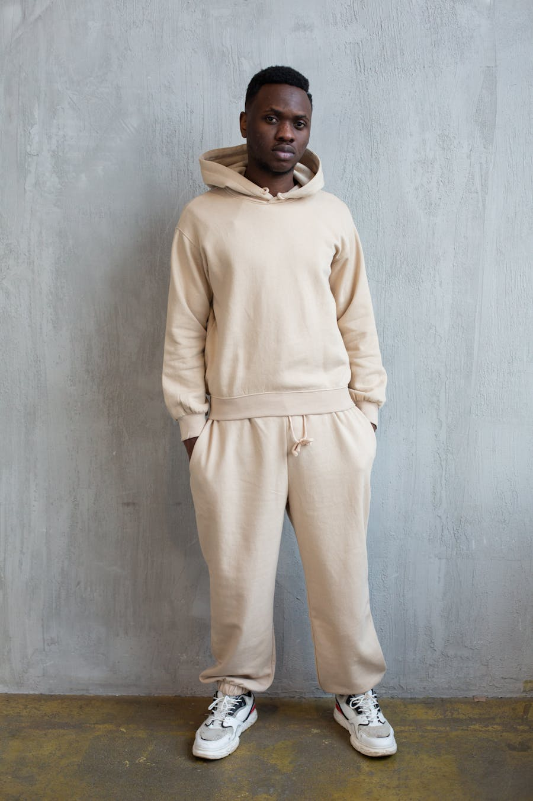
Уютная пятница / дома но не пижама
Тотал-беж: худи + штаны + кроссы
Тотал-беж трикотаж — это «домашка», которая не выглядит как домашка. Один тон верха и низа = силуэт читается «дорогим», а не «диванным».
Свободный крой штанин с резинкой — комфорт без слишком-спорта. Не obegает зад, ягодицы видны естественно.
Кремовые кроссы в тон костюму. Если выйти за хлебом или на zoom — лук собранный, не «вышел в пижаме».
Кофе с другом / парижский вайб
Кремовая фактурная водолазка + берет + джинсовка
Светлый берет вместо бини — «европейская богемность», подходит к овальному лицу Лёши и его волнистым волосам.
Фактурная водолазка кремового цвета — рельеф вязки даёт текстуру, не скучный flat-knit. Открытый овал лица в высоком вороте смотрится художественно.
Денимка как акцент — наброшенная на плечо, не на нём. Это sprezzatura: «вещь между делом».
Длинное пальто-халат с поясом до щиколотки — настоящая зимняя «крепость». Пояс на талии = не балахон, силуэт сохраняется.
Бордовая или винная водолазка = тёплый цветной акцент у горла + дополнительный термослой. Не чёрная и не серая.
Шарф горчично-оливковый намотать вокруг — функция + цвет. Лучше работает чем чёрный/серый: фото в инстаграме потом не выглядит «угрюмо».
9. Четыре архетипа стиля — выбираем направление
Под Лёшу подходят четыре крупных «школы» мужского стиля. Можно миксовать, можно выбрать одну как опорную. От выбора зависит шопинг: бренды, ткани, фактуры.
1. Итальянский sprezzatura
Флоренция, Pitti Uomo, Брунелло Кучинелли
Мягкие неструктурированные пиджаки, рубашки на голое тело или поверх футболки, замшевые лоферы, светлые брюки. «Дорогая небрежность».
Lemaire, COS warm, Studio Nicholson — чистые линии в Autumn-палитре
Минимализм, но без холодного серо-чёрного. Тотал-лук в одной тёплой гамме: шоколадный поло + шоколадные wide брюки, или кремовый верх + верблюжий низ. Никаких принтов, никаких логотипов.
Бренды: Lemaire, Studio Nicholson, COS (тёплая линия), Arket, Margaret Howell, 12 STOREEZ, Uniqlo +J.
3. Японский селвидж-кэжуал
Visvim, Beams, тяжёлый деним и ремесленная фактура
Плотные ткани, грубоватая фактура, индиго-деним, рабочие куртки, кожа с патиной. Минимум блеска, всё «как ручная работа».
Бренды: Visvim, Beams, Engineered Garments, Margaret Howell, A Vontade, Jelado.
4. Британский tweed-кэжуал
Drake's, твид, шерсть, охотничьи мотивы
Твидовые пиджаки, кашемировые свитеры, шерстяные шарфы, ботинки на резиновой подошве. Прохладный английский деревенский шик.
Бренды: Drake's, Cordings, Private White VC, Barbour, Sunspel, Margaret Howell.
Рекомендация под Лёшу: опорный — итальянский sprezzatura + 30% японский селвидж. Sprezzatura даёт «солидно/дорого» с мягкостью под Soft Classic Кибби. Японский кэжуал — для будней (плотные ткани, селвидж-джинсы, рабочие куртки). Скандинавский подмешивается для базы (футболки, мериносы). Британский tweed — только осенью точечно (один пиджак, один шарф).
10. Галерея вдохновения — реальные комплекты
Фото мужчин в палитре Soft Autumn и smart casual. Сохраняй те, что цепляют — потом подберём конкретные модели на твой бюджет.
Тотал-камел: куртка + брюкиОвершот-куртка + прямые брюки в тон. Чистая Autumn-палитра, workwear-вайб.Тотал-шоколад: поло + широкие брюкиМинимализм в тёплой палитре. Главный приём «солидно через монохром».Корд-блейзер + широкие брюкиШоколадный вельвет + цветной paisley галстук. Эстетика 70-х, sprezzatura.
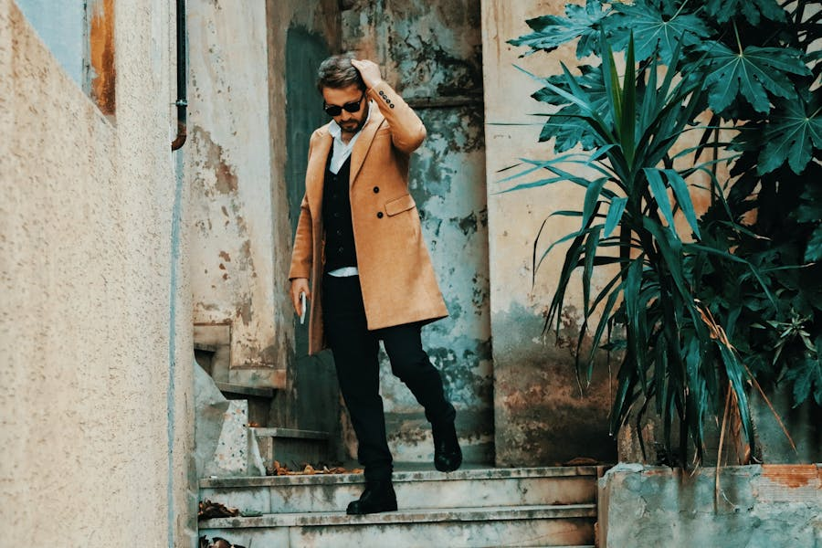
Верблюжье пальто + жилет + челсиSprezzatura «солидно». Тёмные волосы и борода — близкий типаж.Длинное верблюжье пальтоДо голени, с поясом. Прямые джинсы, бежевые челси. Эталон Autumn.Оливковая пуховка + верблюжий низТёплая зимняя слоистость. Бини в тон куртке + кремовый трикотаж.Парка + клетка + шоколадOutdoor-кэжуал в Autumn. Зелёная парка → клетчатая рубашка → шоколадные брюки.Кремовый свитер + шоколадные wideТёплый минимализм. Закатный свет даёт всю палитру Autumn.Клетчатый shacket + светлые брюкиОсенний кэжуал в горчично-охровой клетке. British tweed без «дедовщины».Подтяжки + горчичные широкие брюкиВинтаж sprezzatura. Pleated wide-leg в охре — что нужно Лёше.
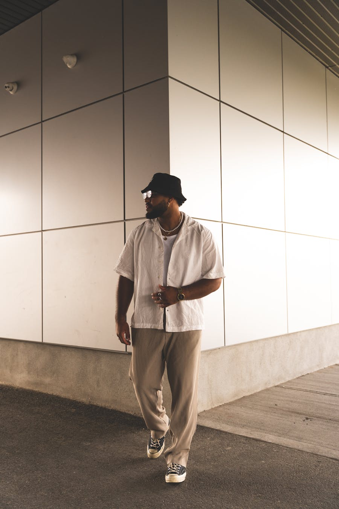
Льняная рубашка + кремовые широкиеЛето / межсезонье. Свободный крой по всему силуэту, тёплые нейтрали.Клетчатый блейзер + кремовые брюкиSmart casual. Прямой широкий крой, лоферы на резиновой подошве.
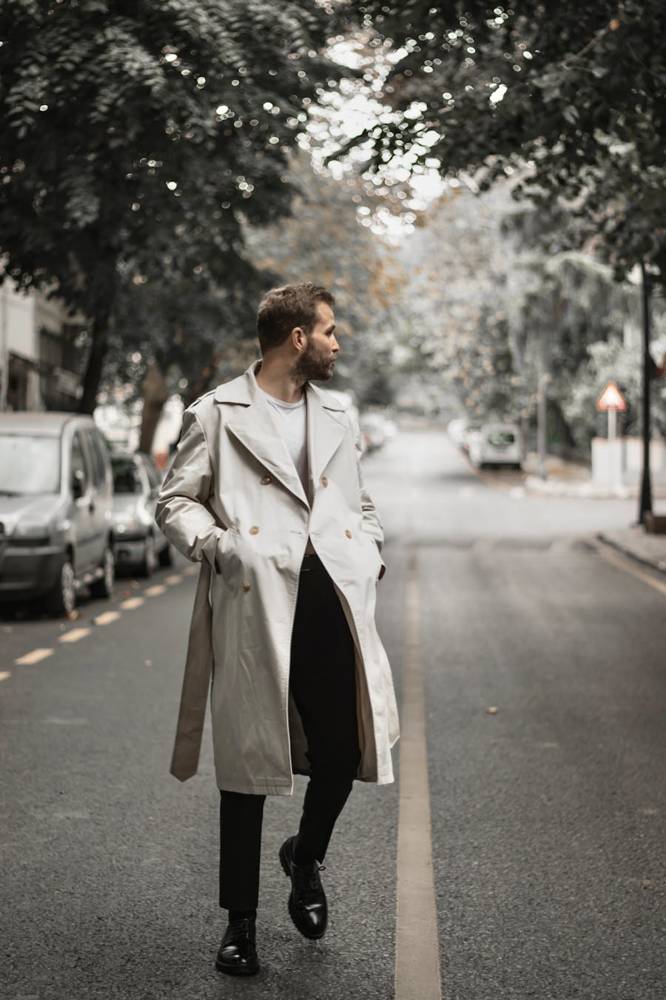
Бежевый тренч + дербиТренч у лица — тёплый бежевый. Низ можно затемнить. Питер весной.
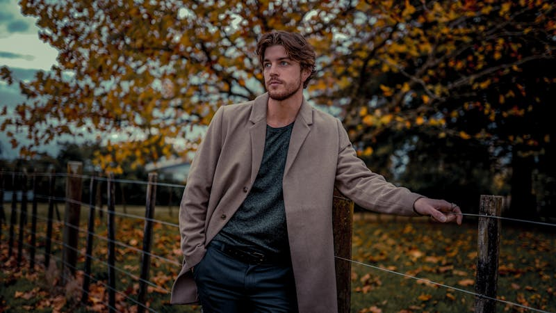
Пальто в осеннем паркеПалитра совпадает с природой Soft Autumn. Сезонный лук.
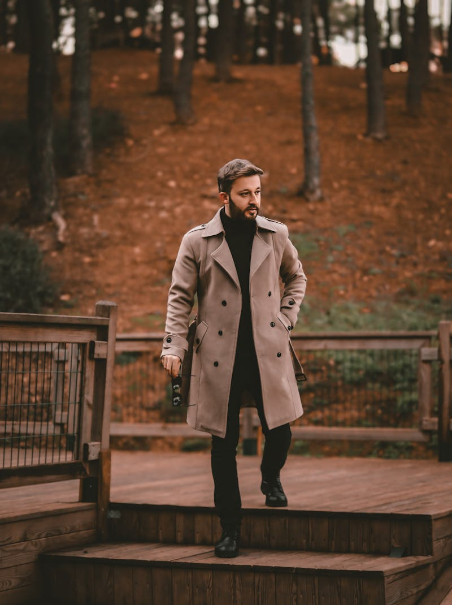
Тренч + аналоговая камераАксессуар-якорь даёт характер. Бежевый тренч — must для весеннего Питера.Верблюжье пальто + бордоУчебник Autumn: пальто + винная водолазка. Лоферы с амортизирующей подошвой.
Правило цвета в галерее: каждое фото проверено на попадание в палитру Soft Autumn — никакого чистого чёрного у лица, серо-стального, ледяного голубого. Если видишь чёрный — он только как нижний слой или акцент обуви, у лица тёплый цвет.
Как пользоваться галереей: листай → отмечай в голове или говори вслух «вот это да, вот это нет». По избранному я пойму, в каком направлении конкретно тебе нравится — sprezzatura, минимализм, tweed или микс. Все фото — Pexels, открытая лицензия.
11. Иконы стиля для референса
Реальные люди с похожим типажом или стилем, которые удобно гуглить в Pinterest для насмотренности. Не «копировать», а ловить настроение.
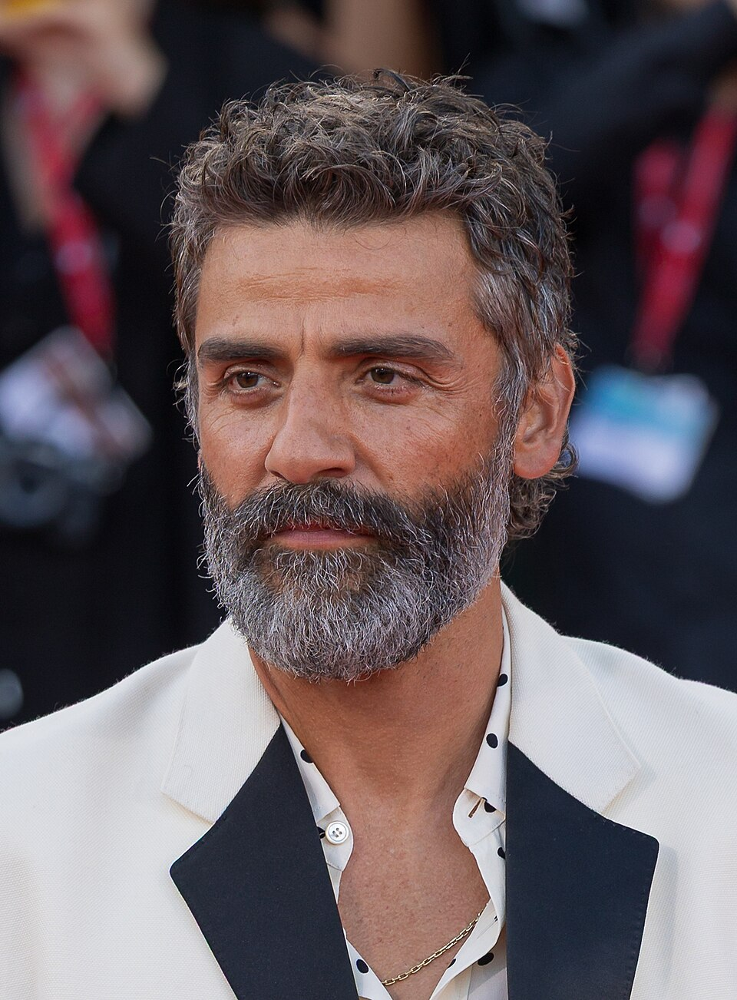
Близкий типаж
Оскар Айзек
Тёмные волнистые волосы, тёплый цветотип, мягкие черты. Smart casual в палитре Autumn. Сериал «Scenes from a Marriage» — учебник кэжуала на 40+.
Pinterest: «Oscar Isaac off-duty», «Oscar Isaac Scenes from a Marriage»
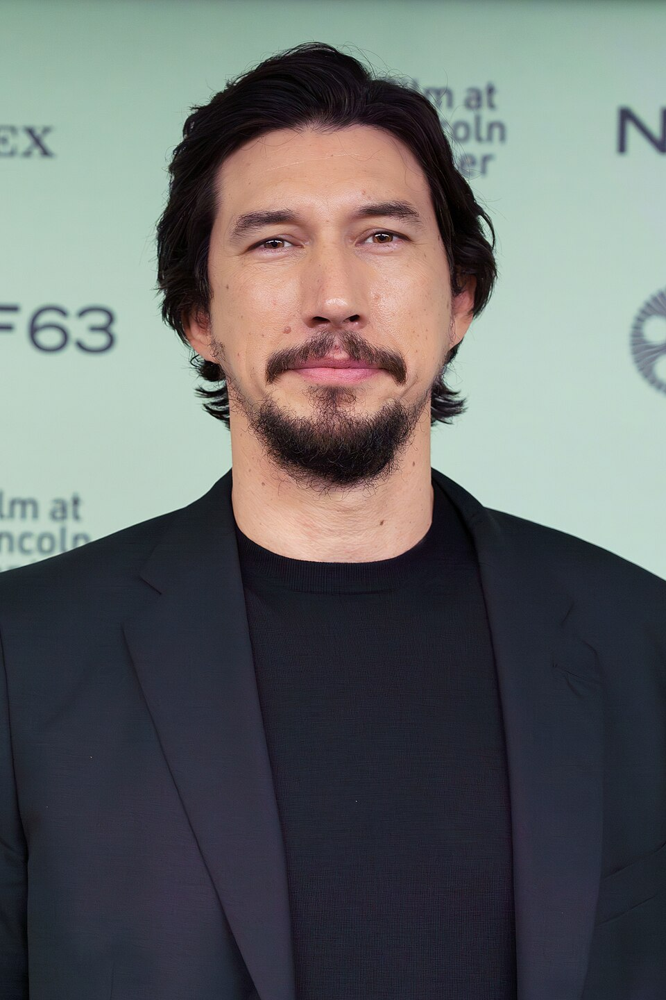
Кэжуал-богема
Адам Драйвер
Длинные волосы, неструктурированные пиджаки, кардиганы, кашемир. Богемно-художественный вайб — напрямую то, что Лёше близко.
Pinterest: «Adam Driver street style», «Adam Driver casual»
V-силуэт + плотный торс
Джейк Джилленхол
Тот же V-силуэт на мускулах. Носит овершоты, шерстяные пальто, тёмное индиго. Как одевать широкие плечи без жёсткой структуры.
Pinterest: «Jake Gyllenhaal street style», «Jake Gyllenhaal off-duty»
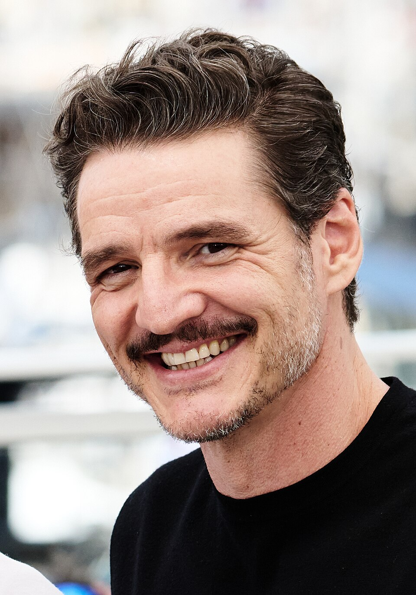
«Зрелый дорогой» 40+
Педро Паскаль
Эталон «солидно и дорого» без занудства. Часто в верблюжьем, шоколадном, петроле. Cмесь sprezzatura и минимализма.
Pinterest: «Pedro Pascal street style», «Pedro Pascal suit»
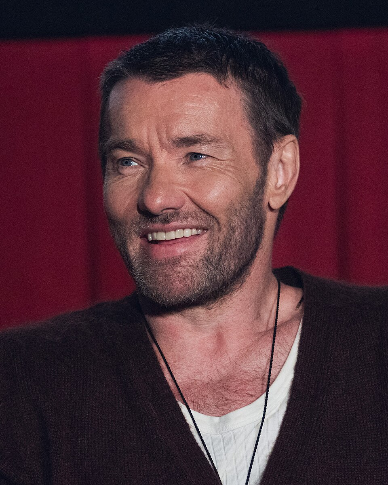
Крупный + тёплый
Джоэл Эджертон
Крепкое сложение как у Лёши, тёплая палитра. Smart casual без жёсткой формальности. Хороший пример для плотных мужчин.
Pinterest: «Joel Edgerton casual», «Joel Edgerton red carpet»
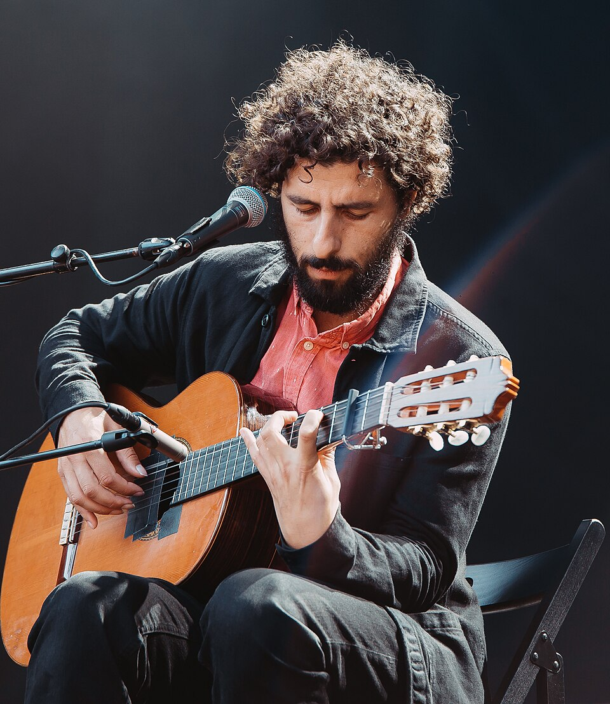
Длинные волосы + борода
Хосе Гонсалес
Шведский певец. Длинные тёмные волны, борода, базовая палитра. Тихий «художник, который выглядит спокойно и дорого».
Pinterest: «José González musician style»
Что искать в Pinterest и Google Images: «Pitti Uomo street style men», «smart casual men 2026», «brunello cucinelli lookbook», «sprezzatura men», «soft autumn men palette», «menswear pleated trousers», «men casual wide leg trousers». Сохраняй то, что цепляет — потом разберём, что именно из этого Лёше пойдёт.
12. План — что ещё добавим на сайт
Что уже есть, что в работе, что впереди.
1
Цветотип + палитра ✓
Soft Autumn, 10 цветов «носить», 6 «избегать».
2
Сравнение Уля vs Лёша ✓
Один сезон, разный уклон, общие цвета.
3
Фигура и пропорции ✓
V-shape, мерки, что подчёркивать.
4
Брюки правильно vs неправильно ✓
Mid-rise slim-straight vs baggy с накладными карманами.
5
Обувь при плоскостопии ✓
Что брать, чего избегать, конкретные бренды.
6
Готовые луки ×8 ✓
Дом, встреча, выход, вечер, деловое, поездка, прогулка, выходные.
7
Архетипы стиля ×4 ✓
Итальянский / скандинавский / японский / британский.
8
Иконы для референса ✓
6 имён + что искать в Pinterest.
9
Стрижка и борода под форму лица 🔜
Что подходит к овально-вытянутому лицу: длина волос, форма бороды, идеи для барбера. С картинками.
10
Аксессуары 🔜
Ремни, часы, сумка-портфель, шарфы, очки. Что докупить чтобы «дорого» поднялось ещё на ступень.
11
Гид по примерке в магазине 🔜
Чек-лист: что проверять у брюк (посадка зада, длина, карман), у рубашки (плечи, длина рукава), у пиджака (плечевой шов, длина).
12
Капсула на сезон ×4 🔜
Дом / встречи / выход / поездка. После разбора текущего гардероба — что комбинируем, что докупаем.
13
Шопинг-лист с приоритетами 🔜
Что докупить в первую очередь, во вторую, в третью. С бюджетом по уровням (массмаркет / средний / премиум).
14
Уход и грумминг (опционально)
Парфюм в палитре Autumn (древесные, табачные, кожаные), уход за волосами, маслом для бороды.
15
Чек-лист поездки (опционально)
Как упаковать капсулу на 5 дней так, чтобы из 6 вещей собиралось 8 образов.
16
Связка с гардеробом Ули (опционально)
Образы для совместных фоток. Какие ваши вещи отлично работают в паре по цвету и стилю.
Что мы можем подключить дополнительно:
Pinterest-доска — могу сгенерировать список поисковых запросов под каждый лук, ты сохранишь визуальные референсы в одно место.
Реальные фото-референсы — могу подтянуть через веб-поиск (Pitti Uomo street style, Soft Autumn men, конкретные комплекты) и встроить картинки прямо в сайт.
Калькулятор шопинга — простая страница, где отмечаешь что куплено, и видишь как капсула закрывается процентами.
PDF-версия сайта — могу выгрузить для печати или отправки Лёше.
13. Что дальше — следующие шаги
Это база. Дальше — точные мерки → разбор гардероба → капсулы под контексты → шопинг-лист с конкретными моделями.
Шаг 1 ✅ Диагностика — готово
Шаг 2 🔄 Мерки: W34 / 86 см талия / 104 см бёдра. Длина шагового шва и обувь — ещё уточнить.